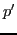
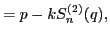
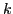
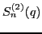
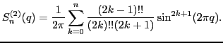
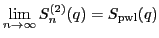

Next:
Quadratic standard map
Up:
2-dimansional maps
Previous:
Sharpen standard map
Truncated standard map
The map is defined as


where

is a parameter and

is defined as

Note that

.
akaishi
2011-06-13